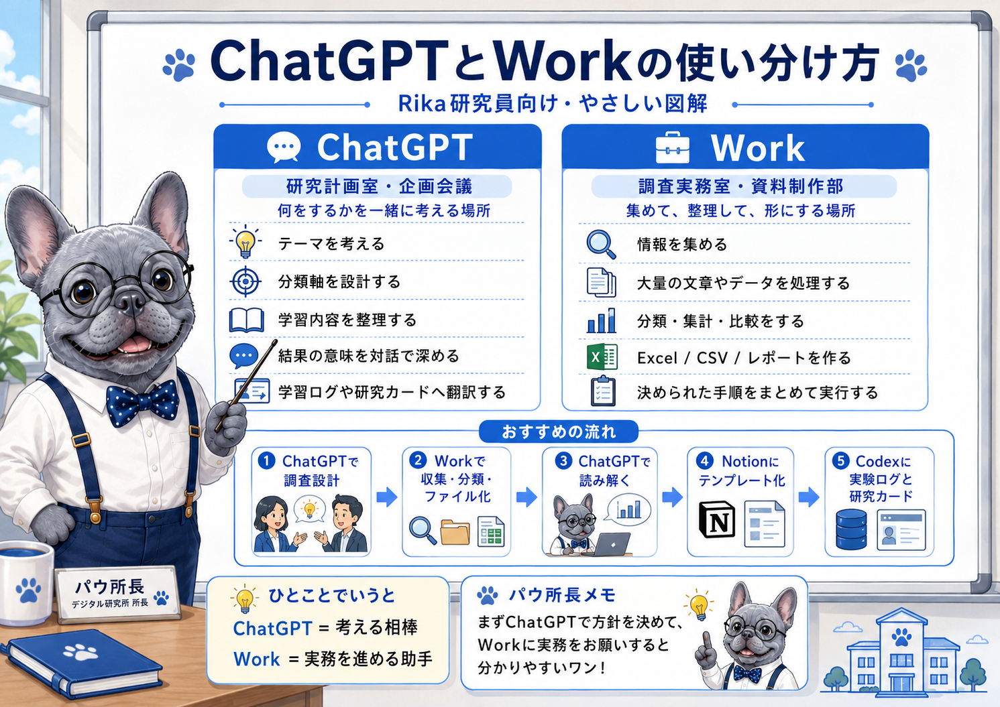

調査設計
目的、対象、取得条件、分類項目、出力形式、注意点を整理し、Workへ渡す依頼文を作りました。
Work Experiment Log｜2026.07.14
ChatGPTとWorkを連携できるようになったので、役割を分けて何かひとつ最後まで試してみたいと思いました。そこで、ChatGPTで調査を設計し、Workでコメント分類とExcel化を行う実験に取り組みました。
Codexへ戻るBackground
ChatGPTとWorkの使い分けは、説明を読むだけではまだ少し抽象的でした。そこで、ひとつの題材を使い、考える工程と実行する工程を本当に分けられるかを試しました。
目的、対象、取得条件、分類項目、出力形式、注意点を整理し、Workへ渡す依頼文を作りました。
コメントを読み取り、主分類、補助分類、反応対象、感情傾向などを付けて、Excelへまとめました。
集計された結果から、視聴者が何に反応していたのかを対話で整理しました。
Method
YouTube側からコメントを直接取得できない環境だったため、コメント欄のスクリーンショットをWorkへ渡しました。取得方法を変えても分析の流れを続けられるかを見る、代替手段の実験にもなりました。
YouTube Shorts動画のTop表示コメント欄。
スクリーンショット内で確認できた親コメント52件。
「分析サマリー」「コメント分類」「分類基準」「調査メモ」の4シートを収録したExcel。
Top表示からの抽出であり、コメント欄全体を無作為に抽出した標本ではないことを明記しました。
Results
発言内容そのものに加え、発言者への信頼や納得感が反応に影響しているように見えました。
未成年者本人だけでなく、医師や周囲の大人が負う責任にも視線が向いていました。
同じ外見や整形の話でも、職業や立場によって評価基準を分ける反応がありました。
テーマだけでなく、誰が出演し、誰が説明し、番組がどう見せたかへの反応も目立ちました。
整形への賛否だけでなく、自然な外見や本人らしさを支持する価値観も表れていました。
Learning
別テーマの動画でも、目的、取得条件、分類、集計、限界の記録という基本構造はそのまま使えました。一方で、主分類は動画内容に合わせて作り直す必要がありました。
Work依頼テンプレートは、固定された答えを出す型ではなく、対象に合わせて分類軸を作り替えるための土台として使えそうです。
取得範囲、画面外のコメント、重複、文章の途切れ、並び順、読み取れない投稿日や返信数などを、調査メモへ残す必要があります。
Workflow

連携は、つないだだけではまだ入口だワン。ひとつの仕事を最後まで流してみると、役割の違いが見えてくるワン！